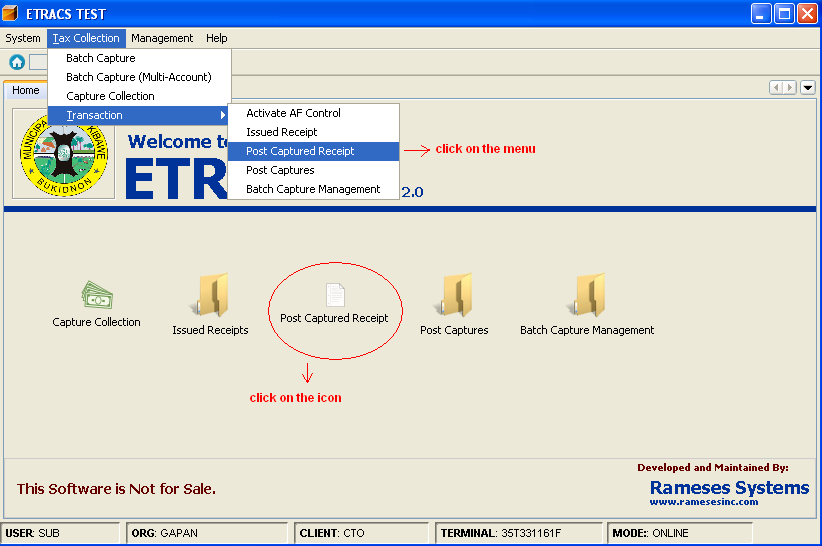
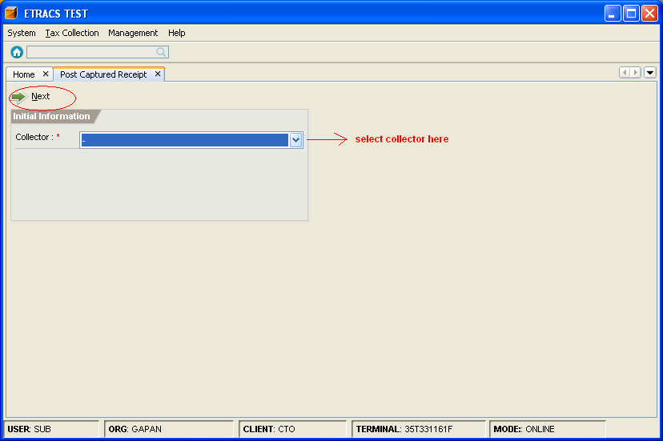
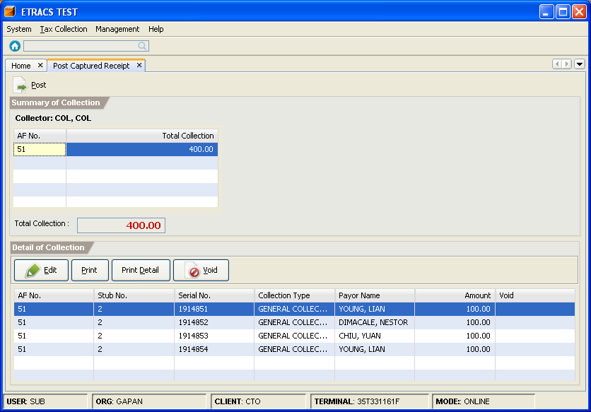
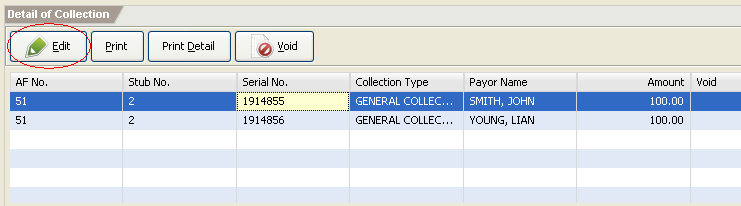
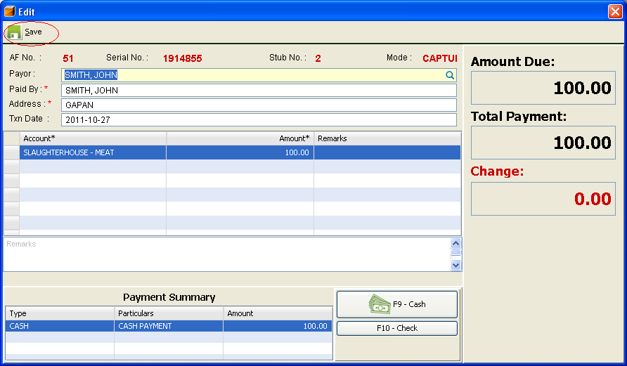
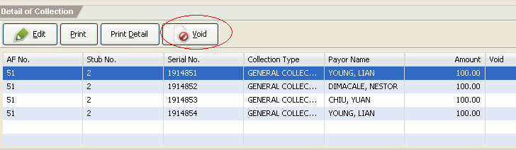

Post Captured Receipts
This facility enables you to post captured receipts. When posting the captured receipts, the issued receipts will
be posted to the account of the selected collector.
How to post captured receipts?
1. On the menu toolbar, go to "Tax Collection -> Transaction -> Post Captured Receipt" item.
You can also click on the "Post Captured Receipt" icon from the home page

2. Select a collector, and click on the "Next" button to proceed.

3. Click on the "Post" button.

How to edit the captured receipt information?
1. Go to Post Captured Receipt page. (Please refer to Posting captured receipt - Step 1 & 2)
2. Select the receipt from the list, and click on the "Edit" button.

3. Change the receipt information, and click on the "Save" button.

How to cancel a captured receipt?
1. Go to Post Captured Receipt page. (Please refer to Posting captured receipt - Step 1 & 2)
2. Select the receipt from the list, and click on the "Void" button.
